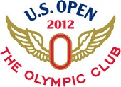
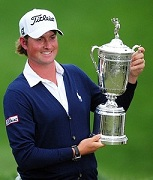

 |
2012 US Open Golf Pool
The Olympic Club San Francisco, California June 11-17, 2012 I’m guessing Rory is regretting the quick lesson he got from Mike Weir on the range recently. Hopefully, Rory’s game will bounce back before he arrives in San Francisco. But glad to see the Tiger of old at the Memorial. What a chip, what a fist pump! Tiger is back, and he’s back in the top 5 in the world and in the first category of the pool entry form. Will Tiger start chipping away at Jack’s major record now that he’s tied him in wins? We’ll see. Enjoy the pool everyone. Get your entries in now! Fore! Congratulations to Webb Simpson on his first major victory! Congrats to Barry Thompson, The Bear, on his pool victory! |
 Webb Simpson 2012 US Open Champ |